| Deliverable | Location |
|---|---|
| Deployed Azure Function URL | https://dietinsights-func-9c7a4a.azurewebsites.net/apiEndpoints: /insights, /recipes, /clusters, /health |
| Dashboard (Azure App Service web app) | https://dietinsights-web-9c7a4a.azurewebsites.netApp Service instead of Static Web Apps because of the student subscription's region policy (section 2) |
| GitHub repository (frontend + backend) | Pending: https://github.com/pawsp7/<repository> |
| Documentation | This document (docs/Phase2_Documentation.pdf); source in docs/Phase2_Documentation.html |
Phase 1 analysed All_Diets.csv (7,806 recipes, 5 diet types, 19 cuisines) with pandas: average macronutrients per diet, top protein recipes, most common cuisines, protein-to-carbs and carbs-to-fat ratios, and Matplotlib/Seaborn charts. That work ran locally and in a Docker container, with Azurite standing in for Blob Storage.
Phase 2 moves the same analysis to Azure. The CSV now lives in a private container in an Azure Storage account. An Azure Function App (Python) reads it, cleans it with the Phase 1 rules, and returns chart-ready JSON from four HTTP endpoints. An App Service web app (Free tier) hosts the dashboard, which calls those endpoints from the browser and draws the charts with Chart.js. All resources sit in one resource group, diet-analysis-rg, and one script (infra/deploy.ps1) provisions and deploys all of it.
The assignment allows either Azure Static Web Apps or App Service for the dashboard. App Service was used because the Azure for Students subscription only allows deployments to five regions (Canada Central, France Central, Norway East, Belgium Central, Mexico Central), and Static Web Apps can't be created in any of them. The deploy script still supports Static Web Apps (-FrontendHost staticwebapp) for subscriptions without that policy.
| Component | Phase 1 (local) | Phase 2 (cloud) |
|---|---|---|
| Function execution | Local Python script / Docker container | Azure Functions (Python 3.13, Flex Consumption plan) |
| Blob storage | Azurite emulator | Azure Storage account, private datasets container |
| Configuration | Hard-coded file path | App settings (environment variables): DIETS_STORAGE_CONNECTION, DIETS_CONTAINER, DIETS_BLOB, DIETS_CACHE_SECONDS |
| Output | Console output and PNG files | JSON API, plus a dashboard in the browser |
| Deployment | docker build / docker compose | infra/deploy.ps1 (Azure CLI), with GitHub Actions running the tests |
js/config.js holds the Function App's API base URL.app.js calls the Function App with fetch(), for example GET /api/insights?diet=keto. The dashboard and the Function App are on different origins, so the Function App's CORS list allows only the dashboard's hostname.refresh=true is passed, the function downloads All_Diets.csv from Blob Storage using the connection string in its app settings, then cleans it with pandas. Warm instances reuse the parsed DataFrame for 5 minutes.{"data": …, "meta": …}. The dashboard draws the charts from data and shows meta: function execution time, cache hit or miss, which blob was read and when it was last modified, and the app and region that served the call.| Resource | Name (from deploy.ps1) | Configuration and purpose |
|---|---|---|
| Resource group | diet-analysis-rg | Holds every resource for the project, so the whole project can be removed with one delete (infra/teardown.ps1). Tagged project=nutritional-insights, phase=2, course=CPSY300. |
| Storage account | dietinsightsst<suffix> | StorageV2, Standard_LRS, minimum TLS 1.2, HTTPS only, anonymous blob access disabled. The private container datasets holds All_Diets.csv. The Function App's own runtime state uses the same account. |
| Function App | dietinsights-func-<suffix> | Linux, Python 3.13, Flex Consumption plan (pay per execution; -Plan consumption selects the classic Consumption plan instead). Deployed by zip deploy with a remote build, so requirements.txt is installed inside Azure. CORS allows the dashboard's origin only. |
| Application Insights | created with the Function App | Collects request traces, exceptions and the logging.info line each endpoint writes (status, execution time, cache result). |
| App Service plan + web app | dietinsights-webplan-<suffix>, dietinsights-web-<suffix> | Windows, Free (F1) plan in Canada Central. IIS serves frontend/, which has no build step. HTTPS only, minimum TLS 1.2, FTP disabled. web.config adds nosniff and referrer-policy headers. |
The suffix is the first 6 hex characters of SHA-256(subscription id + resource group). Names stay globally unique and stay the same on every re-run, so the script updates existing resources instead of creating duplicates.
| Setting | Value / purpose |
|---|---|
DIETS_STORAGE_CONNECTION | Connection string of the storage account holding the dataset. It is set by the deploy script and never committed. If unset, the code falls back to AzureWebJobsStorage. |
DIETS_CONTAINER / DIETS_BLOB | datasets / All_Diets.csv. Pointing these at another blob changes the dataset without a code change. |
DIETS_CACHE_SECONDS | 300: how long a warm instance reuses the parsed data before reading the blob again. |
FUNCTIONS_WORKER_RUNTIME, AzureWebJobsStorage | Set by Azure when the Function App is created. |
Locally, the same settings live in backend/local.settings.json, with UseDevelopmentStorage=true pointing at Azurite. That file is git-ignored; local.settings.example.json is the committed template. The only difference between local and cloud is the connection string, which was the goal of moving from Azurite to live Blob Storage.
The backend uses the Python v2 programming model (backend/function_app.py). The analysis code is kept in analysis.py, separate from Azure, so it can be unit tested on a plain DataFrame. data_source.py handles Blob Storage and caching.
| Endpoint | Query parameters | Returns |
|---|---|---|
GET /api/insights | diet (all or a diet type), refresh=true to bypass the cache | Summary figures, average macros by diet (bar), recipe distribution (pie; by diet, or by cuisine when a diet is chosen), Pearson correlation matrix (heatmap), a 600-point sample stratified by diet (scatter), top 5 protein recipes per diet, most common cuisine per diet. |
GET /api/recipes | diet, search (matches recipe, diet or cuisine), sort (protein, carbs, fat, name), order, page, pageSize (1–100) | One page of recipes, each with both ratios, plus total and totalPages. |
GET /api/clusters | diet, k (2–6) | k-means groups of recipes by macro profile. Features: share of protein, carbs and fat plus log of total grams, standardised; k-means++ seeding with a fixed seed. Each cluster has a name (e.g. "High-protein"), size, average grams and its most common diet. |
GET /api/health | none | Whether storage is configured and the blob is reachable, plus blob size and last-modified time. Returns 503 if the blob is unreachable. Used by the deploy script's smoke test. |
"Vegan" and "vegan " count as one diet. A missing cuisine becomes unknown.Protein_to_Carbs_ratio and Carbs_to_Fat_ratio are computed per recipe. Where the divisor is 0 (38 recipes have 0 g fat), the ratio is left blank rather than infinite. All NaN and infinity values become JSON null."meta": {
"endpoint": "insights", "executionTimeMs": 23.1, "coldStart": false, "cache": "hit",
"generatedAt": "2026-10-30T23:14:48Z",
"instance": { "app": "dietinsights-func-…", "region": "Canada Central", "python": "3.13" },
"dataset": { "storageAccount": "dietinsightsst…", "container": "datasets", "blob": "All_Diets.csv",
"blobLastModified": "…", "sizeBytes": 702514, "cleanRows": 7806, "blobLoadMs": 34.2 },
"filters": { "diet": "keto" }
}
Invalid parameters return 400 and an unknown diet returns 404. If storage is unreachable or misconfigured, the endpoint returns 503 with the reason. Every response, including errors, carries executionTimeMs. The functions use anonymous auth level because the dashboard is public and only reads data. A function key embedded in browser JavaScript would not stay secret, so CORS and read-only endpoints are the real controls.
The dashboard (frontend/) keeps the course UI template's structure, Tailwind classes and section order: Explore Nutritional Insights → Filters and Data Interaction → API Data Interaction → Pagination. Every element now loads live data from the Function App.
| Requirement | How the dashboard meets it |
|---|---|
| At least three visualizations from the Azure Function | Five: grouped bar chart (average protein, carbs and fat by diet), scatter plot (protein vs carbs, coloured by diet, optional log scale), correlation heatmap, pie chart (recipes by diet, or by cuisine within the selected diet), and a cluster scatter with a summary table. |
| Interaction controls | Diet-type filter (redraws every chart and panel); recipe search box (debounced); sort selector; Get Nutritional Insights refresh button (forces a fresh read from Blob Storage); Get Recipes; Get Clusters with a k selector; real pagination (Previous / numbered pages / Next); Reset filters. |
| Metadata such as execution time | Strip under the header: function execution time (from the server), browser round-trip time, cache hit or Blob read, blob path, blob last-modified time, and the serving app and region. A request log lists the last 10 calls with status, function ms, round-trip ms and cache result. |
| Publicly accessible | Deployed to an Azure App Service web app (Free F1) by infra/deploy.ps1. Re-running the script redeploys it. |
Other details: a connection indicator in the header; error messages that name the failing URL and point to CORS when a request is blocked; replies from older requests are ignored while the user types; responsive layout down to phone width. The API base URL comes from js/config.js and can be overridden with ?api=<url> for testing.
az login powershell -ExecutionPolicy Bypass -File infra/deploy.ps1 # or ./infra/deploy.ps1 in Azure Cloud Shell (pwsh) 1. register providers, create resource group diet-analysis-rg 2. create storage account + private container "datasets", upload data/All_Diets.csv 3. create Function App (Flex Consumption, Python 3.13) + Application Insights 4. set app settings DIETS_STORAGE_CONNECTION / DIETS_CONTAINER / DIETS_BLOB / DIETS_CACHE_SECONDS 5. zip the backend and deploy with remote build; poll /api/health until the blob is reachable 6. create App Service plan (Free F1) + web app; HTTPS only, TLS 1.2, FTP off 7. add the web app's origin to the Function App's CORS list; write frontend/js/config.js 8. zip deploy frontend/ to the web app; smoke-test /api/insights → URLs saved to infra/deployment-outputs.json
npx azurite-blob --location .azurite # local Blob Storage, as in Phase 1 cd backend && python -m venv .venv && .venv\Scripts\pip install -r requirements-dev.txt copy local.settings.example.json local.settings.json .venv\Scripts\python upload_dataset.py # seed All_Diets.csv into Azurite func start # or: .venv\Scripts\python dev_server.py cd ..\frontend && python -m http.server 4280 # dashboard at http://localhost:4280
dev_server.py loads local.settings.json and serves the same decorated handlers on port 7071. It is for machines without Azure Functions Core Tools (see Challenges).
.github/workflows/ci.yml runs the backend test suite on every push and pull request. Deployments go through infra/deploy.ps1, which is safe to re-run.
backend/tests/. Cover cleaning (mean fill, text normalisation, divide-by-zero ratios, schema check), averages against the Phase 1 numbers, JSON safety (no NaN), the per-diet filter, pagination and search, k-means behaviour and repeatability, and the HTTP handlers (cache hit/miss/refresh, 400/404/503 codes, health check) with a fake blob source.localhost:7071, and the dashboard runs on localhost:4280. Figures 5–12 come from this setup./api/health, /api/insights, /api/recipes?search=pho, and /api/clusters?k=9 (returns 400 as expected).backend> .venv\Scripts\python -m pytest -q .................... [100%] 20 passed in 0.92s
Deployed on October 30, 2026 by infra/deploy.ps1. The list below was read back from Azure with az resource list -g diet-analysis-rg and the matching show commands.
| Resource | Name | Type / SKU | Verified settings |
|---|---|---|---|
| Storage account | dietinsightsst9c7a4a | StorageV2, Standard_LRS | TLS 1.2 minimum, HTTPS only, anonymous blob access off. Private container datasets holds All_Diets.csv (702,514 bytes). |
| Function App | dietinsights-func-9c7a4a | Linux, Python 3.13 | Functions clusters, health, insights, recipes. CORS: https://dietinsights-web-9c7a4a.azurewebsites.net only. |
| Flex Consumption plan | ASP-dietanalysisrg-8bcd | FC1 | Created with the Function App. |
| Application Insights | dietinsights-func-9c7a4a | (component) | Connected through APPLICATIONINSIGHTS_CONNECTION_STRING. Azure also adds a "Smart Detection" action group. |
| App Service plan | dietinsights-webplan-9c7a4a | Windows, F1 (Free) | Hosts the dashboard web app. |
| Web app (dashboard) | dietinsights-web-9c7a4a | Windows (IIS) | HTTPS only (HTTP returns 301 to HTTPS), TLS 1.2, FTP disabled, HTTP/2 on. Responses carry nosniff and Referrer-Policy headers. |
Function App settings (names only): DIETS_STORAGE_CONNECTION, DIETS_CONTAINER, DIETS_BLOB, DIETS_CACHE_SECONDS, plus AzureWebJobsStorage, DEPLOYMENT_STORAGE_CONNECTION_STRING and APPLICATIONINSIGHTS_CONNECTION_STRING added by Azure.
GET /api/insights?diet=keto 200 function 97.6 ms cache miss (fresh blob read) GET /api/recipes?search=chicken&page=2 200 function 8.7 ms cache hit GET /api/clusters?k=4 200 GET /api/clusters?k=9 400 'k' must be between 2 and 6 GET /api/insights?diet=nope 404 unknown diet type 'nope' Origin: https://dietinsights-web-9c7a4a… Access-Control-Allow-Origin returned Origin: https://evil.example no Access-Control-Allow-Origin (browser blocks it) GET http://dietinsights-web-9c7a4a… 301 redirect to https://
Every response reports "region": "canadacentral" and Python 3.13. Cold calls took about 4–5 s in the browser, because a new Flex instance starts and downloads the blob. Warm calls finish in under 40 ms of function time and about 0.3–0.6 s round trip.
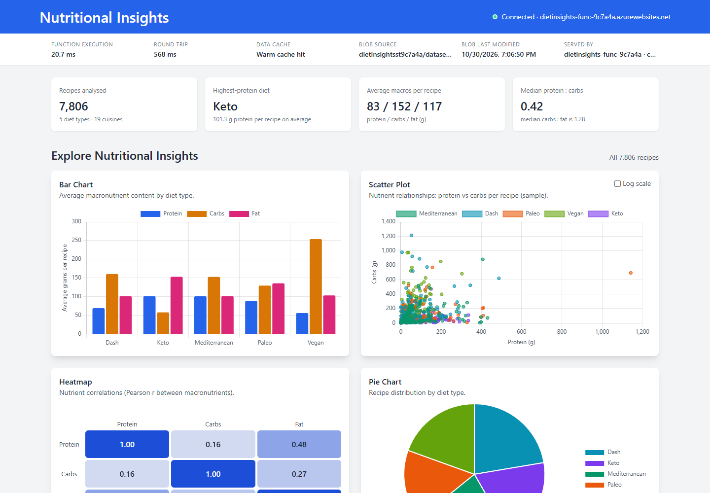
https://dietinsights-web-9c7a4a.azurewebsites.net. The header shows the connected Function App; the metadata strip shows function execution time, round trip, warm-cache hit, the Azure blob it read (dietinsightsst9c7a4a/datasets/All_Diets.csv) and the serving app.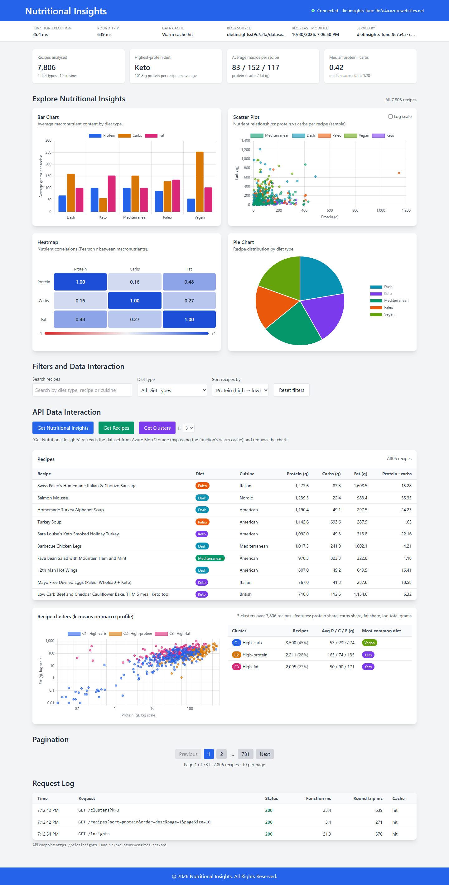
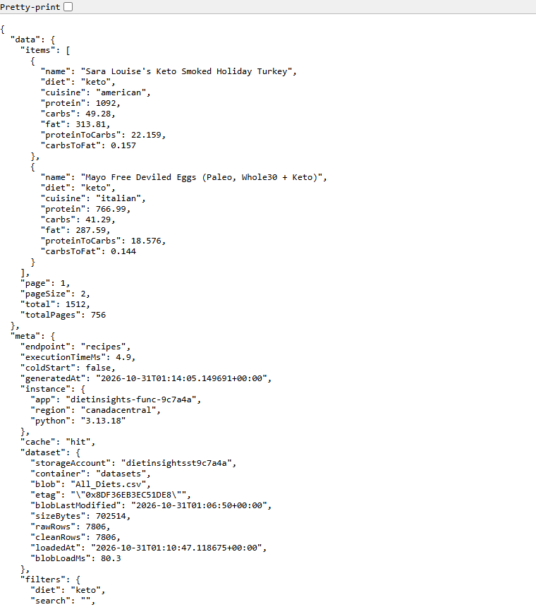
GET https://dietinsights-func-9c7a4a.azurewebsites.net/api/recipes?diet=keto&sort=protein&pageSize=2 in a browser (JSON formatted for reading). meta shows execution time, region, cache result and the blob read from the storage account.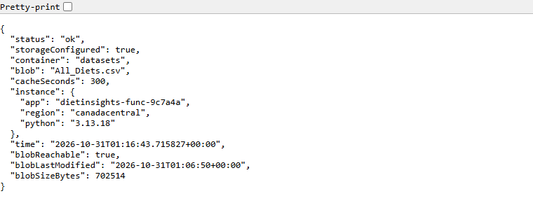
GET /api/health on Azure: storage configured and blob reachable.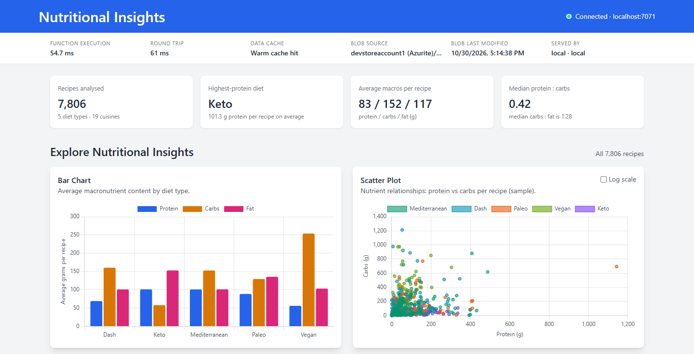
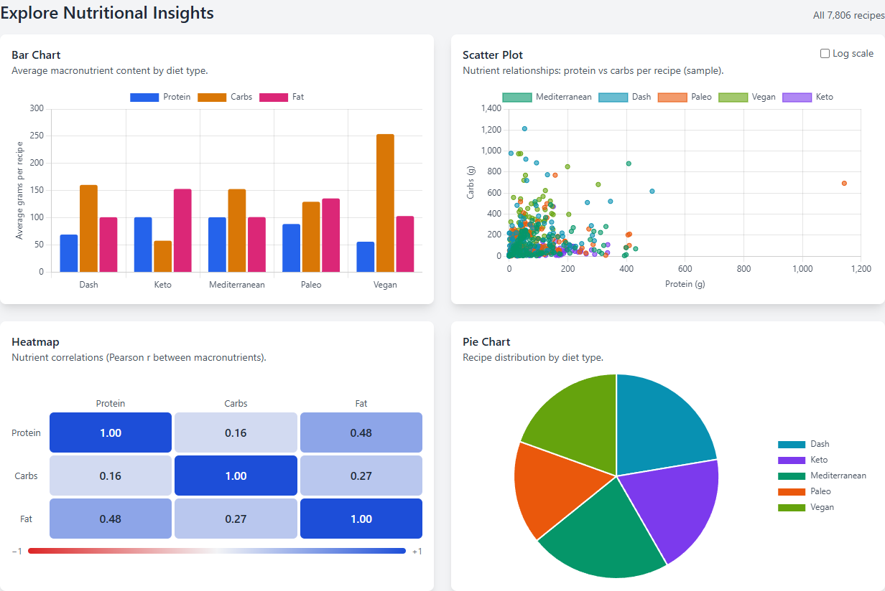
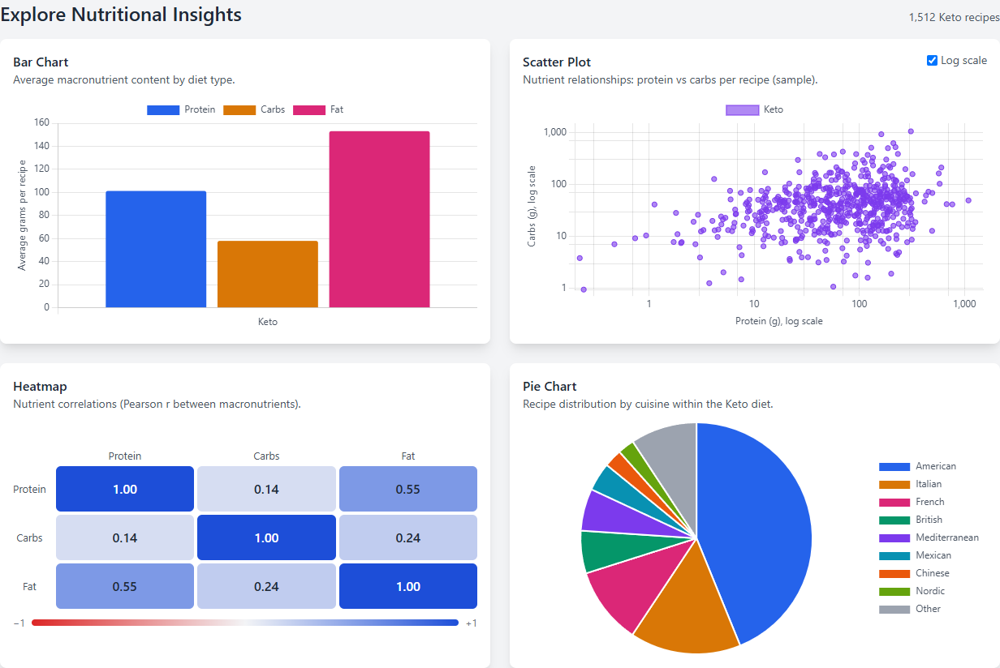
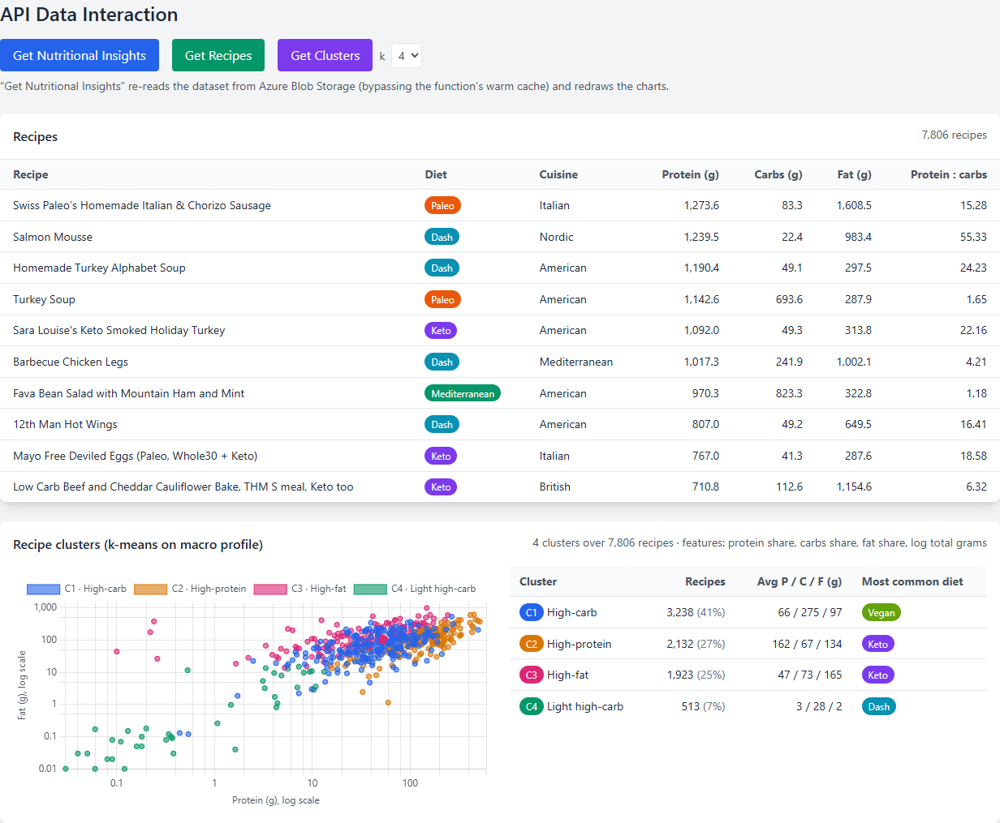
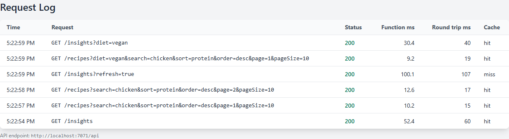
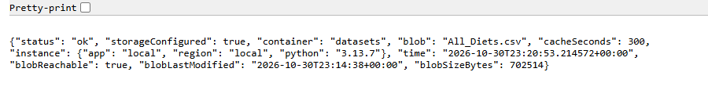
/api/health tested in the browser: storage configured, blob reachable.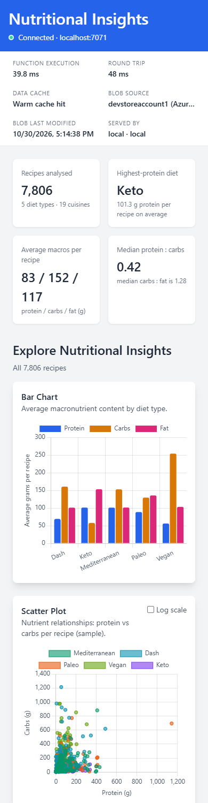
| Challenge | Solution |
|---|---|
| Moving from Azurite to live Blob Storage without code changes | All storage settings are read from environment variables. Locally the connection string is UseDevelopmentStorage=true; in Azure it is the real account's connection string, set by the deploy script. The code path is identical in both. |
| Static Web Apps not allowed on the student subscription | The Azure for Students "Allowed resource deployment regions" policy denies every region that offers Static Web Apps. The dashboard is static files, so it is hosted on a Free (F1) App Service web app in Canada Central instead, which the assignment also accepts. web.config sets the same security headers that staticwebapp.config.json would. |
| Browser calls from the dashboard to the Function App are cross-origin | The deploy script adds only the dashboard's hostname to the Function App's CORS list, and the dashboard shows a CORS hint when a request is blocked. -AllowLocalDev also allows localhost:4280 for testing a local dashboard against the cloud API. |
| Re-downloading and re-parsing a 700 KB CSV on every request is slow and wasteful | Warm instances cache the cleaned DataFrame for DIETS_CACHE_SECONDS. refresh=true (the "Get Nutritional Insights" button) forces a fresh read, and meta.cache shows which happened. In local tests, cached calls took about 10–60 ms of function time. |
| Heavy-tailed data (one recipe has 3,405 g carbs) squeezes most points into a corner | A log-scale toggle on the scatter plot, log axes on the cluster chart, and a log-of-total-grams feature for clustering. The scatter sample is capped at 600 points, stratified by diet, to keep the payload small. |
| JSON cannot represent NaN or infinity (38 recipes have 0 g fat) | Ratios with a zero divisor are left blank, and all numbers pass through one helper that turns NaN and infinity into null. A test serialises the full payload with allow_nan=False. |
| pandas 3 behaviour changes | groupby().apply() no longer passes the grouping column, which broke the per-diet sampling. It was rewritten as shuffle + groupby().head(). |
| Choosing a hosting plan | Microsoft recommends Flex Consumption for new apps and is retiring the Linux Consumption plan, so the default is Flex Consumption, with a -Plan consumption fallback in case a subscription or region does not offer Flex. |
| First remote build failed: "No matching distribution found for azure-functions==2.3.0" | azure-functions 2.x needs Python 3.13 (the version the tests ran on), but the first Function App was created for 3.12. Changing its runtime setting afterwards did not change the Flex build image, so the empty app was recreated with Python 3.13. The script default and the CI workflow now use 3.13 too. |
| Azure CLI 2.91 creates Linux App Service plans by default | A Linux web app needs a language runtime even for static files. The script passes --is-linux false, so IIS on a Windows Free plan serves the files with no runtime or startup command. |
| Azure Functions Core Tools would not install on this machine (the npm installer fails under Node.js 24) | The cloud deployment does not need Core Tools: it uses Azure CLI zip deploy with remote build. For local runs, dev_server.py serves the same function handlers with the same settings file. Core Tools from winget (func start) also works. |
| Keeping secrets out of the repository | local.settings.json is git-ignored, connection strings exist only in Function App settings, and the deploy script hides command output that would print them. The repository holds no keys or tokens. |
Every resource runs on a free or pay-per-use tier: App Service Free (F1), Flex Consumption (includes a monthly free grant of executions), Standard_LRS storage (one 700 KB blob), and Application Insights (low volume). When the project has been graded, infra/teardown.ps1 deletes the resource group and stops all charges.
backend/ Azure Function app (Python v2 model)
function_app.py HTTP endpoints, parameter validation, response metadata
analysis.py pandas/numpy analysis (no Azure dependencies)
data_source.py Blob Storage download + warm cache, settings from env vars
host.json Functions host config; also requirements.txt, .funcignore,
local.settings.example.json
tests/ pytest suite (20 tests)
dev_server.py local HTTP harness for the handlers
upload_dataset.py seeds All_Diets.csv into Azurite or any storage account
frontend/ dashboard: index.html, css/app.css, js/app.js, js/config.js,
web.config (App Service), staticwebapp.config.json (Static Web Apps)
data/All_Diets.csv dataset uploaded to Blob Storage
infra/ deploy.ps1, teardown.ps1, deployment-outputs.json (after deploy)
docs/ this document, screenshots, tools/capture.mjs
.github/workflows/ ci.yml